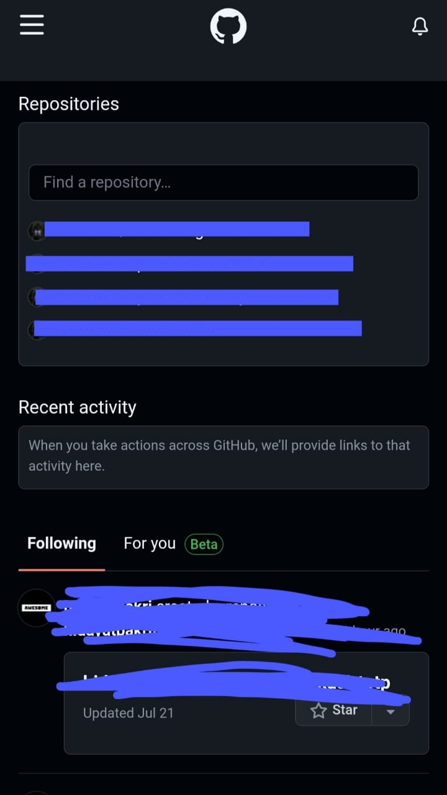

Keamanan komunikasi adalah segala bentuk upaya yang dilakukan untuk mengamankan akses informasi. Dalam keamanan komunikasi, kegiatan ini termasuk ke dalam jenis keamanan informasi. Dalam praktiknya, yang menjadi subjek pada kegiatan keamanan komunikasi adalah keamanan dan yang menjadi objek adalah komunikasi. Kegiatan ini menunjukkan bagaimana mengamankan proses komunikasi. Komunikasi dalam keamanan komunikasi dapat berupa menyampaikan dan menerima informasi, serta dapat berupa pengamanan akan informasi yang dimiliki. Ada berbagai ancaman dalam proses komunikasi, di antaranya adalah penyadapan telepon, pelacakan pada saat pengguna yang mengunjungi salah satu website, dan kemungkinan ancaman-ancaman lain yang tanpa sadar dialami pengguna. Dalam keseharian, secara tidak sadar mungkin banyak hal yang merugikan pengguna dalam mengakses informasi dan berkomunikasi, maka dari itu, keamanan komunikasi dinilai penting agar terhindar dari ancaman-ancaman yang berbahaya dan merugikan pengguna.
Autentikasi adalah suatu proses yang menjadi tindakan atau pembuktian (validasi) terhadap identitas pengguna ketika ingin memasuki dan mengakses sistem penting tertentu. Biasanya proses ini ada pada Google. Proses validasi tersebut secara umum menggunakan nama serta password dari pengguna sehingga nantinya bisa dijadikan sebagai penanda atau verifikasi tentang apakah seseorang tersebut diperkenankan masuk ke sistem atau tidak. Salah satu contoh paling nyata adalah autentikasi Google Play Store. Aplikasi tersebut hanya akan benar-benar mengizinkan bahwa pengguna bisa masuk ke sistem jika memakai password yang benar dan sinkron.
Github adalah platform khusus developer yang diciptakan karena terinspirasi dari cara bekerja programmer. Jika kamu sedang menjadi seorang programmer atau tertarik dengan programmer, kamu bisa mencoba Github sebagai open source ke bisnis, menjadi host, mengecek sebuah kode, dan mengelola project serta menciptakan perangkat lunak bersama 56 juta lebih pengguna di seluruh penjuru dunia.
Secara sederhana, Github adalah sebuah platform yang merupakan manajemen project dengan sistem versioning code, sekaligus menjadi platform sosial media bagi para developer di seluruh dunia. Tentunya, banyak sekali fungsi Github yang bisa dimanfaatkan oleh para developer. Selain berkontribusi dalam proyek tertentu, GitHub juga memungkinkan usernya untuk berkomunikasi dengan orang-orang yang memiliki kesamaan visi dan misi. Anda bahkan bisa follow mereka dan melihat proyek yang mereka kerjakan atau bahkan mencari tahu siapa saja yang terhubung dengan mereka.
1. Masuk ke web resmi Github yaitu github.com, Lalu tekan menu bar garis tiga
2. Kemudian pilih menu Sign In
3. Setelah itu kita akan di alihkan ke halaman login, di sini kita di suruh menginputkan username/email dan password. Bagi yang belum mempunyai akun, harus mendaftar terlebih dahulu untuk bisa login.
4. Setelah kita memasukkan email dan password. Selanjutnya kita akan di alihkan ke halaman untuk menginputkan token. Token ini akan kita dapatkan/terima dari pesan email yang di kirimkan oleh pihak Github.
5. Selanjutnya buka email kita berdasarkan akun yang terdaftar di Github. Setelah itu cari pesan dari pihak Github yang berisi token, Contoh seperti gambar di bawah ini. Setelah itu kita masukkan tokennya pada form yang tadi.
6. Setelah kita berhasil memasukkan token, kita akan di alihkan ke halaman utama setelah kita login, halaman ini berisi semua data yang kita simpan di akun Github.
Dari penjelasan di atas dapat disimpulkan bahwa GitHub adalah sebuah platform khusus developer yang memberikan layanan berupa pengelolaan project hingga kolaborasi dalam pembuatan software melalui cloud. Feed pada GitHub juga memiliki fitur yang sangat lengkap sehingga dapat membuat pengguna nyaman dalam berselancar. Poin positif di sini adalah GitHub dapat menjadi media sosial yang memiliki postingan positif tentang ilmu pemrograman.